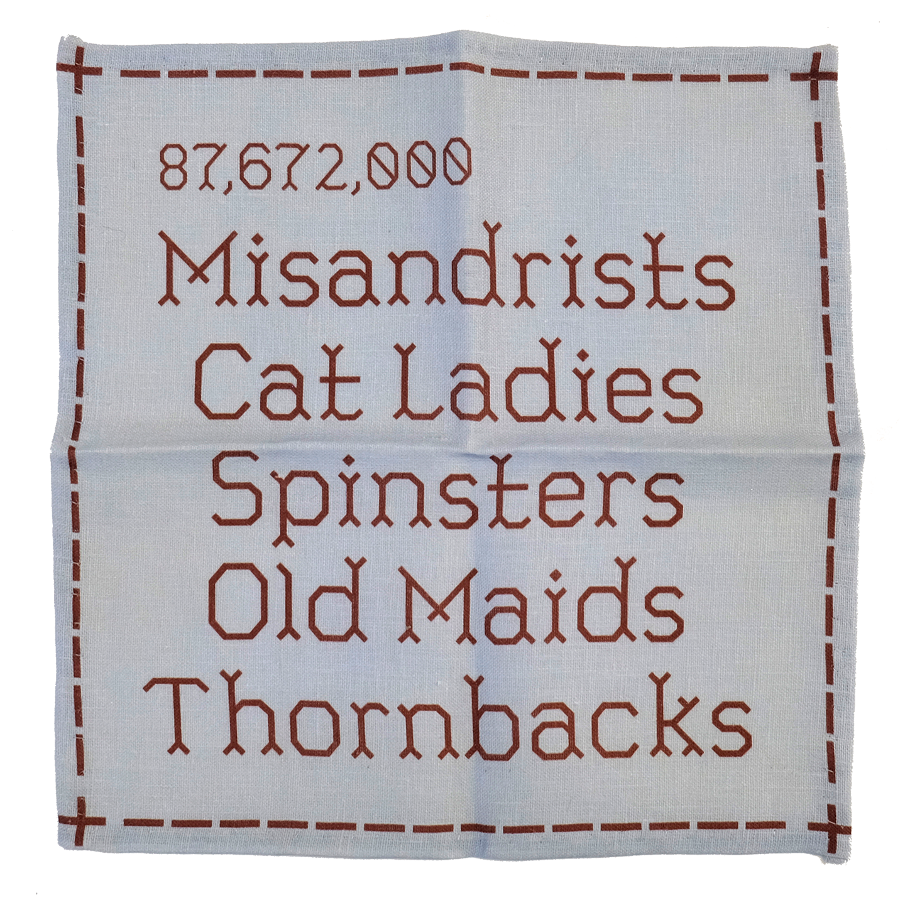

Sampler
Fall 2024
Typeface Design
Sampler is a new embroidery typeface based on samplers made by schoolgirls in the 18th and 19th centuries. Unlike other embroidery fonts, Sampler avoids a pixelated look by using diagonal “stitches” at a fixed angle to more accurately emulate real sewing.
Embroidery samplers were a primary means of girls' education in the United States for over a hundred years. Schoolgirls created these beautiful design objects that simultaneously represented the limitations and advancements of their education during this time period: girls were taught literacy but for the purpose of being better wives and maids.
Where other embroidery fonts limit themselves to a pixelated, cross-stitch system, Sampler incorporates diagonal lines at a fixed angle to create a more realistic and less digital look.
I designed a set of four handkerchiefs for an unconventional typeface specimen to showcase the historical roots of the typeface and bring it into a modern setting. The designs were created digitally and printed on 100% linen using a fabric plotter.